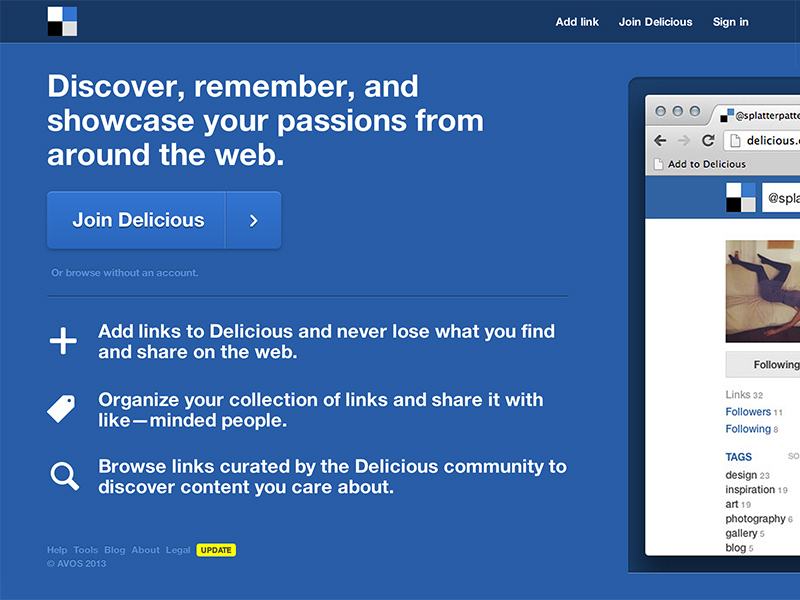
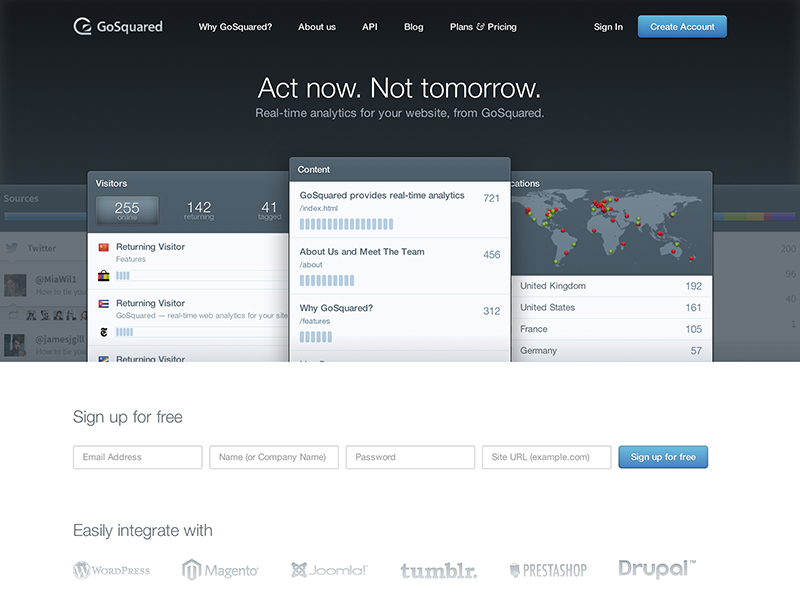
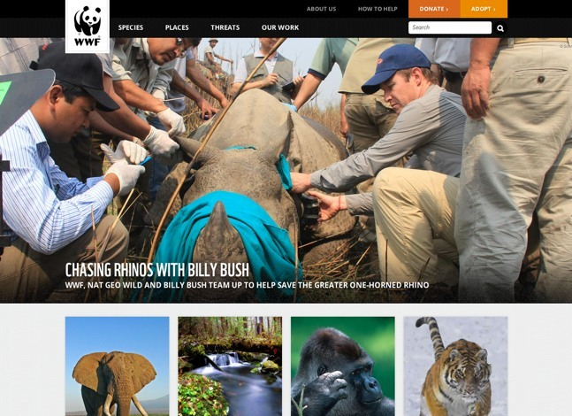
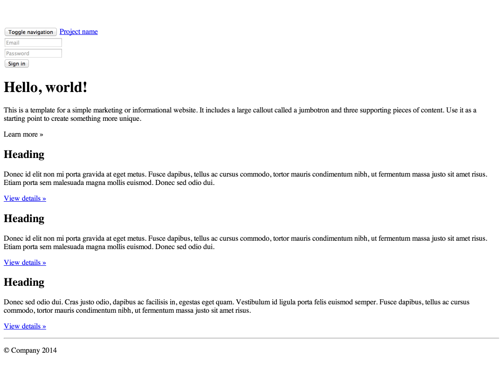
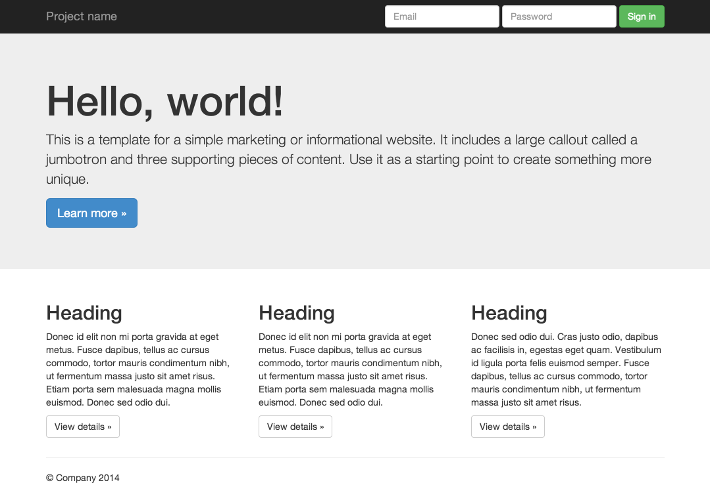

Intro to CSS Frameworks
by Nicole Dominguez
Startup Institute, April 9th, 2014
About me
Front End Developer & Designer at Sawhorse Media
- Self taught
- Dropped out of college
- Freelance, startup & corporate over six years
- Tweet at me! @sodevious
CSS frameworks are a set of HTML, CSS and JS components that offer a base foundation for web projects.
They are designed to make our lives easier, while providing a great base to work off of.
They get used by most modern websites!
|  |

|
|  |  |
Why we use CSS Frameworks
- Allow for rapid development and prototything
- Give you a foundation with best practices to build upon
- Streamline your workflow
- Give unity to your site
- Easy for more than one person to work on a project
- Huge time saver!
- Great for interfaces, where a cohesive front end is necessary
- Gives your site a common "language" throughout
Typical features of CSS frameworks
- Grid based
- Open source
- Come with a CSS reset
- Modular, reusable, scalable
- Customizable, easy to edit
- Responsive and mobile friendly
- Out of the box utilities!
- Some allow for use with preprocessors
- Popular frameworks have great community support
- Typically include modern best practices
Bootstrap!
The most popular front-end framework for developing responsive, mobile first projects on the web.
- Great community support, constantly updated
- Customizable
- Sass and Less
|  |  |
Live Examples
How to use Bootstrap
- Download Bootstrap
- Include bootstrap CSS and JS
- Use their markup in your code
- Huzzah!
All you need is
...and maybe some Javascript
Let's build a blog layout... live!
Bonus
Use a CDN. Content delivery networks host files that you can hotlink and use in your projects without actually hosting any files yourself.
What's out there
- Pure
- Bootstrap
- Foundation
- Skeleton
- ...and a lot more
Choose what works for you.
Things to look for
- Is there good documentation?
- How often is it updated?
- Is there a community? Are there tools and resources
- Is there a grid? Is it responsive?
Your existing projects
- Include the files
- Pick and chose what you want to use
Warning
Using a lot of other people's code can make your site too heavy
Loading lots of unused code is unecessary and affects the user experience.
Be mindful of file sizes, load times and performance
Don't let frameworks define your design. Use them as a utility, not a crutch!